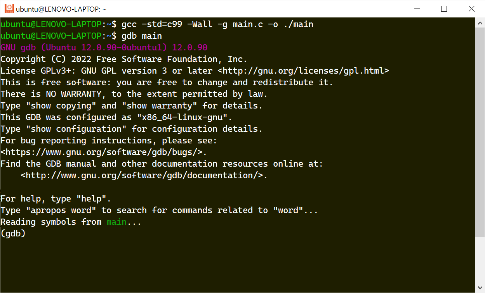
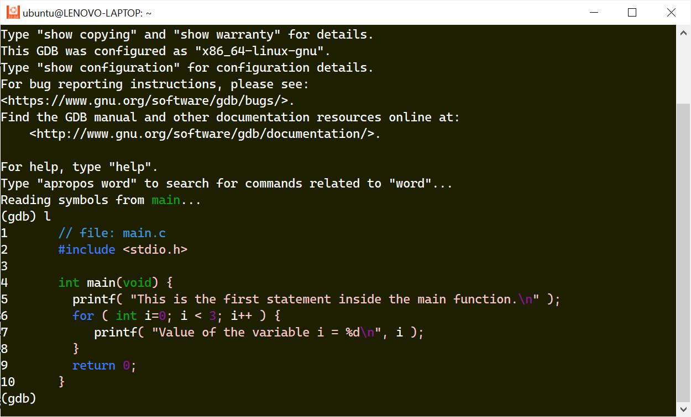
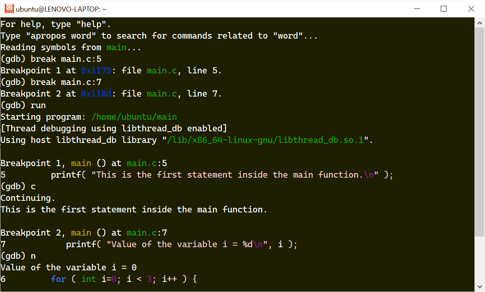
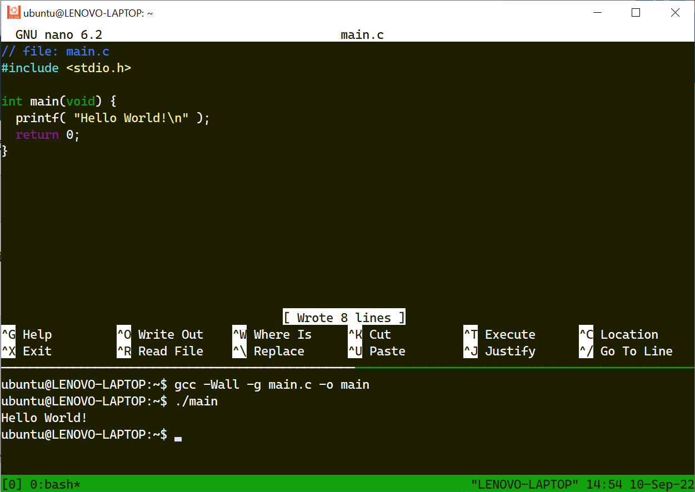

การใช้งาน GNU C/C++ Toolchain สำหรับระบบปฏิบัติการ Linux ในเบื้องต้น#
▷ การเขียนโปรแกรมภาษา C/C++ สำหรับ Linux#
ภาษา C และภาษา C++ เป็นสองภาษาคอมพิวเตอร์ที่มีความใกล้เคียงกัน ภาษา C มีบทบาทที่สำคัญตั้งแต่อดีตจนถึงปัจจุบัน หากย้อนไปถึงประมาณ ปีค.ศ. 1972 เมื่อ Dennis Ritchie ได้เริ่มต้นพัฒนาภาษา C และมีการนำมาใช้เพื่อพัฒนาเคอร์เนลของระบบปฏิบัติการ Unix และระบบปฏิบัติการอื่น เช่น Linux และ BSD เป็นต้น ในช่วงเวลาต่อมา
ภาษา C++ ได้ถูกพัฒนาขึ้นโดย Bjarne Stroustrup โดยมีเป้าหมายคือ ให้เป็นภาษาที่ดีกว่า C ("A Better C") และมีความแตกต่างจากภาษา C โดยเฉพาะอย่างยิ่ง คือ การรองรับการเขียนโปรแกรมเชิงวัตถุ (Object-Oriented Programming: OOP) เช่น การสร้างคลาสและอ็อปเจกต์จากคลาส (Classes and Objects) เป็นต้น
ภาษา C/C++ จะเหมาะสำหรับการเขียนโปรแกรมที่เกี่ยวข้องกับฮาร์ดแวร์และเน้นความเร็วในการประมวลผล เช่น การเขียนโปรแกรมไมโครคอนโทรลเลอร์หรือระบบสมองกลฝังตัว เป็นต้น และทั้งสองภาษาก็มีมาตรฐานอุตสาหกรรม และได้รับการดูแลและพัฒนามาจนถึงปัจจุบัน และก็มีมาตรฐานหลายเวอร์ชันให้เลือกใช้งาน
- นับตั้งแต่อดีต ได้มีการกำหนดมาตรฐาน ISO / IEC 9899 C Standards สำหรับภาษา C หลายเวอร์ชัน ได้แก่ ANSI-C หรือ C89 (1989), C99 (1999), C11 (2011) และ C18 (2018) ตามลำดับ แต่ C99 ยังเป็นเวอร์ชันที่มีการใช้งานแพร่หลายอยู่
- ถ้าเป็นภาษา C++ ก็มีมาตรฐาน ISO C++ Standards เริ่มตั้งแต่ C++98 (1998), C++11 (2011), C++14 (2014), C++17 (2017), และ C++20 (2020) ตามลำดับ
บทความนี้กล่าวถึง การลองเขียนโปรแกรมภาษา C และ C++ ในเบื้องต้น และทดลองคอมไพล์โค้ดตัวอย่าง โดยใช้โปรแกรมแบบ Command Line Tools เช่น GNU Toolchain และ Clang / LLVM สำหรับระบบปฏิบัติการ Linux / Debian-based Linux Distribution เช่น Ubuntu และ Raspbian OS (ได้ทดลองใช้ Ubuntu 22.04 LTS)
$ cat /etc/os-release | head -n 5
PRETTY_NAME="Ubuntu 22.04.1 LTS"
NAME="Ubuntu"
VERSION_ID="22.04"
VERSION="22.04.1 LTS (Jammy Jellyfish)"
VERSION_CODENAME=jammy
▷ GNU Toolchain#
ในการคอมไพล์โค้ดภาษา C/C++ ให้เป็นไฟล์โปรแกรมที่เรียกใช้งานได้ (Executable File) จะต้องมีการติดตั้งซอฟต์แวร์ที่เรียกว่า GNU Toolchain ซึ่งประกอบด้วยโปรแกรมย่อยแบ่งเป็นกลุ่มได้ดังนี้
- The GCC (GNU Compiler Collection) เป็นโปรแกรมที่ทำหน้าที่เป็นคอมไพเลอร์สำหรับโค้ดภาษา C/C++
- The GNU Binary Utilities (binutils) เป็นโปรแกรมต่าง ๆ ที่ไม่ใช่คอมไพเลอร์ เช่น
cpp,ar,ld,size,file,readelf, ... - The GNU C/C++ Library เป็นไลบรารี มีทั้งแบบที่เป็น Static และ Shared / Dynamically Linked Library สำหรับการสร้างและใช้งานฟังก์ชันที่ถูกกำหนดโดยมาตรฐานของภาษา C/C++ (เช่น
libc6และlibstdc++6) - The GNU Debugger (gdb) เป็นโปรแกรมสำหรับการดีบักการทำงานของโปรแกรมที่ได้จากการคอมไพล์โค้ดแล้ว
สำหรับผู้ที่ใช้ Linux/Ubuntu ให้ทำคำสั่งต่อไปนี้ใน Bash Shell เพื่อติดตั้งโปรแกรม
$ sudo apt update
$ sudo apt install -y build-essential gdb nano
ข้อสังเกต: เครื่องหมาย $ หมายถึง สัญลักษณ์สำหรับ Shell Prompt เพื่อรับคำสั่งจากผู้ใช้
สำหรับ Ubuntu / Debian-based Linux Distro แพ็กเกจ build-essential ประกอบด้วยโปรแแกรมต่าง ๆ ที่เกี่ยวข้องกัน (เรียกว่า meta-package) เช่น
gcc(the GNU compiler for the C Programming language)g++(the GNU compiler for the C++ programming language)libc6-dev(the GNU standard C/C++ library + header files)make(used for directing the compilation of programs using Makefile)
และในการติดตั้งแพ็กเกจ เช่น gcc
ก็จะมีการติดตั้งแพ็กเกจอื่นที่เกี่ยวข้องด้วย
ลองใช้คำสั่งต่อไปนี้ ตรวจสอบดูว่า build-essential เกี่ยวข้องกับแพ็กเกจอื่นอย่างไรบ้าง
$ apt-cache depends build-essential
เมื่อได้ติดตั้ง build-essential สำเร็จแล้ว ถัดไปให้ทำคำสั่งใน Bash Shell ดังต่อไปนี้
เพื่อแสดงเวอร์ชันของโปรแกรมที่ได้ติดตั้งไว้พร้อมใช้งานแล้ว เช่น gcc, g++ และ make เป็นต้น
$ gcc --version | head -n 1
gcc (Ubuntu 11.2.0-19ubuntu1) 11.2.0
$ g++ --version | head -n 1
g++ (Ubuntu 11.2.0-19ubuntu1) 11.2.0
$ make --version | head -n 1
GNU Make 4.3
คำสั่ง nano (GNU nano) เป็นโปรแกรมประเภท Command-Line Text Editor
เหมาะสำหรับการเรียกใช้งานในหน้าต่าง Terminal หรือ Shell Console
นอกจากนั้นยังมีตัวเลือกอื่นอีกที่เป็น Editor สำหรับระบบปฏิบัติการ Ubuntu Desktop เช่น Geany เป็นต้น
ลองเขียนโค้ดภาษา C ตามตัวอย่างต่อไปนี้ โดยใช้ nano และทำคำสั่งใน Bash Shell ดังนี้
$ nano hello.c
โค้ดตัวอย่างนี้ เมื่อทำงานจะแสดงข้อความ Hello World!
ในช่องทางเอาต์พุต (เรียกว่า Standard Output) ของโปรแกรม
// file: hello.c
#include <stdio.h>
int main(void) {
printf( "Hello World!\n" );
return 0;
}
เมื่อเขียนหรือแก้ไขโค้ดแล้ว ให้บันทึกลงไฟล์ โดยกดคีย์ Ctrl+O แล้วกดปุ่ม Enter
เพื่อยืนยันการบันทึกไฟล์ hello.c หากต้องการจบการทำงานของโปรแกรม nano ให้กดคีย์ Ctrl+X
คำอธิบายโค้ด
- ในบรรทัดแรก มีสัญลักษณ์
//(Double Slash) ดังนั้นสิ่งที่ตามมาจนจบหนึ่งบรรทัด เป็นคำอธิบายโค้ด (Line Comment) และไม่มีผลต่อการทำงานของโปรแกรม - บรรทัดถัดมาเป็นคำสั่ง
#includeซึ่งเป็นสิ่งที่เรียกว่าC Preprocessor Directiveเพื่อนำเข้าไฟล์ประเภท Header File ที่มีชื่อว่าstdio.hภายในไฟล์นี้ มีการประกาศและกำหนดรูปแบบของฟังก์ชัน เช่นprintf()ที่จะมีการใช้งานถัดไปในโค้ด เป็นต้น - ถัดไปเป็นการสร้างฟังก์ชัน
mainทุกโปรแกรมภาษา C จะต้องมีฟังก์ชันอย่างน้อยหนึ่งฟังก์ชัน ซึ่งก็คือ ฟังก์ชันmain- การสร้างฟังก์ชันเริ่มต้นด้วยการกำหนดรูปแบบของฟังก์ชัน หรือเรียกว่า Function Header
- มีการระบุชนิดของข้อมูลที่ฟังก์ชันจะให้ค่า (Return Type) เมื่อจบการทำงานของฟังก์ชัน เช่น
intซึ่งหมายถึง ค่าที่เป็นเลขจำนวนเต็ม - มีชื่อฟังก์ชัน (Function Name) ในกรณีนี้คือ
main - ถัดจากชื่อฟังก์ชันจะต้องมีรายการอาร์กิวเมนต์ (Argument List) อยู่ภายใน
(...)ซึ่งเป็นสิ่งที่เป็นอินพุตสำหรับการทำงานของฟังก์ชัน แต่ถ้าไม่มี ให้ระบุว่าเป็นvoid - จากนั้นตามด้วยบล็อกของคำสั่งที่อยู่ระหว่าง
{...}หรือเรียกว่า Function Body ภายในประกอบด้วยประโยคคำสั่งต่าง ๆ (Statements) แต่ละคำสั่งจะถูกแบ่งโดยสัญลักษณ์;(Semicolon) - ฟังก์ชันจะจบการทำงาน เมื่อรันโค้ดมาถึงประโยคคำสั่ง
returnที่ให้ค่าเป็น0ในตัวอย่างนี้ (โดยทั่วไป0หมายถึง จบการทำงานแบบปรกติของฟังก์ชันmain)
ลองคอมไพล์โค้ด hello.c โดยใช้คำสั่ง gcc เลือกใช้มาตรฐาน C99
(-std=c99) ให้แสดงข้อความเตือนจากการทำงานของคอมไพเลอร์ (-Wall)
และให้สร้างไฟล์เอาต์พุต (Binary Output File) ที่มีชื่อว่า ./hello
และอยู่ในรูปแบบของไฟล์ที่เรียกว่า Executable and Linkable Format (ELF)
หากต้องการทดลองรันไฟล์โปรแกรมที่ได้เป็นเอาต์พุต ให้ทำคำสั่งดังนี้
$ gcc -std=c99 -Wall hello.c -o ./hello
$ ./hello
Hello World!
ลำดับของคำสั่งในระบบ Linux ต่อไปนี้ ซึ่งเป็นการทำคำสั่ง ls และ awk ตามลำดับในบรรทัดเดียวกัน
จะแสดงชื่อไฟล์ ./hello ที่ได้จากการคอมไพล์โค้ด และแสดงขนาดของไฟล์ดังกล่าว (หน่วยเป็นไบต์)
$ ls -l ./hello | awk -F' ' '{print $NF," ",$(NF-4)}'
./hello 15952
หรือจะใช้คำสั่ง size ซึ่งเป็นส่วนหนึ่งของ GNU binutils แสดงขนาดของส่วนต่าง ๆ (เรียกว่า Sections) ในไฟล์โปรแกรมดังกล่าว โดยแบ่งเป็น
text: Text Section (program instructions) แสดงขนาดของโปรแกรมที่เป็นคำสั่งสำหรับการทำงานของซีพียูdata: Data Section (initialized data) สำหรับตัวแปรประเภท global และ static ที่มีการกำหนดค่าเริ่มต้นและไม่ใช่ 0bss: BSS Section (uninitialized data) สำหรับตัวแปรประเภท global และ static ที่ไม่มีการกำหนดค่าเริ่มต้น (แต่จะถูกกำหนดค่าเริ่มต้นให้เป็น 0 เมื่อโปรแกรมเริ่มทำงาน)
$ size ./hello
text data bss dec hex filename
1375 600 8 1983 7bf hello
หรือจะลองใช้คำสั่ง file แสดงข้อมูลเกี่ยวกับไฟล์ ./hello ตามตัวอย่างดังนี้
$ file ./hello
./hello: ELF 64-bit LSB pie executable, x86-64, version 1 (SYSV),
dynamically linked, interpreter /lib64/ld-linux-x86-64.so.2, ...
นอกจากตัวอย่างโค้ดภาษา C แล้ว ลองมาดูโค้ดตัวอย่างที่เป็นภาษา C++ ที่ให้ผลการทำงานเหมือนกัน และก็สามารถสังเกตเห็นความแตกต่างของรูปแบบคำสั่งได้ไม่ยาก
$ nano hello.cpp
// file: hello.cpp
#include <iostream> // the header file for std (C++ standard library)
int main(void) {
std::cout << "Hello World!" << std::endl;
return 0;
}
ในการคอมไพล์โค้ด จะใช้คำสั่ง g++ แทน gcc และสามารถกำหนดมาตรฐานของภาษาที่จะใช้ในการคอมไพล์โค้ดได้
เช่น -std=c+11 หมายถึง ใช้ C++11 (2011)
$ g++ -std=c++11 -Wall hello.cpp -o ./hello
$ ./hello
Hello World!
ข้อสังเกต: นอกจาก GNU C/C++ Toolchain แล้ว ยังมีอีกตัวเลือกหนึ่งที่ได้รับความนิยมมากขึ้น คือ Clang C/C++ Compiler และ LLDB Debugger ซึ่งเป็นส่วนหนึ่งของ The LLVM Project
การติดตั้งโปรแกรม clang ก็ทำได้ง่าย ดังนี้
$ sudo apt install -y clang
$ clang --version | head -n1
Ubuntu clang version 14.0.0-1ubuntu1
ลองทำคำสั่ง clang หรือ clang++ สำหรับการคอมไพล์โค้ด
$ clang -std=c99 -Wall hello.c -o hello
$ clang++ -Wall hello.cpp -o hello
▷ GCC Compilation Steps#
การใช้คำสั่ง gcc หรือ g++ สามารถคอมไพล์โค้ด C/C++ ในซอร์สไฟล์ (Source File)
ให้เป็นไฟล์เอาต์พุตแบบ Executable File ได้ในคำสั่งเดียว แต่การคอมไพล์โค้ด สามารถแบ่งออกเป็นขั้นตอนย่อยได้ ดังนั้น
- การทำงานของโปรแกรม C Preprocessor (มีคำสั่งที่เกี่ยวข้องคือ
cpp) ที่เกี่ยวข้องกับการใช้งาน Preprocessor Directives หรือ C Macros ในโค้ด เช่น คำสั่ง#includeหรือ#defineเป็นต้น - การคอมไพล์โค้ด
.cหรือ.cppด้วยคำสั่งgccหรือg++ให้เป็นไฟล์ที่มีโค้ดภาษาแอสเซมบลี.s(Assembly Code File) - การคอมไพล์ที่มีโค้ดแอสเซมบลี โดยใช้คำสั่ง
asให้เป็นไฟล์อ็อปเจกต์.o(Object File) - การทำงานของโปรแกรมที่เรียกว่า Linker เพื่อนำไฟล์อ็อปเจกต์ รวมถึงฟังก์ชันของไลบรารีที่เกี่ยวข้อง มารวมกันเพื่อให้ได้ไฟล์เอาต์พุต (ELF) ในขั้นตอนสุดท้าย
ลองทำคำสั่งต่อไปนี้
$ cpp hello.c > hello.i
$ gcc -Wall -S hello.i
$ as hello.s -o hello.o
$ gcc hello.o -o hello
จากนั้นให้ลองดูสิ่งที่อยู่ภายใน hello.i และ hello.s ซึ่งเป็นไฟล์ที่ถูกสร้างขึ้นในขั้นตอนย่อยของการคอมไพล์โค้ด
▷ The GNU Debugger#
คำสั่ง gdb (The GNU Debugger: GDB)
ใช้สำหรับการดีบักการทำงานของโปรแกรมที่ได้จากการคอมไพล์โค้ดภาษา C/C++
ถัดไปเป็นตัวอย่างการใช้ gdb ในเบื้องต้น
เริ่มต้นด้วยการสร้างไฟล์ใหม่ เช่น main.c แล้วเขียนโค้ดตัวอย่างต่อไปนี้
// file: main.c
#include <stdio.h>
int main(void) {
printf( "The for loop begins...\n" );
for ( int i=0; i < 3; i++ ) {
printf( "Value of the variable i = %d\n", i );
}
return 0;
}
ภายในฟังก์ชัน main มีประโยคำสั่ง prinf() สำหรับแสดงข้อความเอาต์พุต
และมีประโยคคำสั่ง for เพื่อทำขั้นตอนซ้ำ (3 ครั้ง) ภายในมีคำสั่ง printf() เช่นกัน
การคอมไพล์โค้ดด้วยคำสั่ง gcc จะต้องมีการระบุ -g ซึ่งหมายถึง
ให้ใส่ข้อมูลต่าง ๆ ที่จำเป็นสำหรับการดีบักรวมไว้ในไฟล์เอาต์พุตด้วย
$ gcc -std=c99 -Wall -g main.c -o ./main
เมื่อคอมไพล์โค้ดและได้ไฟล์ ./main แล้ว ก็เรียกใช้คำสั่ง gdb ดังนี้
$ gdb ./main

รูป: เริ่มต้นเข้าสู่ GDB Session และตำแหน่งที่มีข้อความ (gdb) เป็นสัญลักษณ์
GDB Prompt เพื่อรอรับคำสั่งถัดไป
ตัวอย่างคำสั่งพื้นฐานของ GDB สำหรับขั้นตอนการดีบักโค้ด เช่น
runหมายถึง ให้เริ่มรันโค้ดไปจนจบการทำงานของโปรแกรม หรือเริ่มรันโค้ดใหม่อีกครั้งstartหมายถึง ให้เริ่มรันโค้ดแต่ไปหยุดชั่วคราวที่คำสั่งแรกในฟังก์ชันmainlหรือlistหมายถึง แสดงโค้ดภาษา C ที่เกี่ยวข้อง และสามารถระบุช่วงหมายเลขบรรทัดได้ เช่นlist 1,5แสดงโค้ดตั้งแต่บรรทัด 1 ถึง 5bหรือbreakpointหมายถึง กำหนดตำแหน่งหยุดชั่วคราวโดยระบุหมายเลขบรรทัดในโค้ดcหรือcontinueหมายถึง รันประโยคคำสั่งในโค้ดต่อไป จนกว่าจะถึงตำแหน่งของ Breakpoint ถัดไปnหรือnextหมายถึง ทำประโยคคำสั่งที่อยู่ถัดไปในโค้ดแล้วหยุดชั่วคราว แต่ถ้ามีการเรียกใช้ฟังก์ชัน ก็จะทำจนจบการทำงานของฟังก์ชันดังกล่าวsหรือstepหมายถึง ทำประโยคคำสั่งที่อยู่ถัดไปในโค้ดแล้วหยุดชั่วคราว ถ้ามีการเรียกฟังก์ชันในซอร์สโค้ด ให้เข้าไปทำประโยคคำสั่งข้างในฟังก์ชันแล้วหยุดที่ประโยคคำสั่งแรกของฟังก์ชันfinishหมายถึง ทำคำสั่งไปจนจบการทำงานของฟังก์ชัน หากเข้าไปทำคำสั่งข้างในฟังก์ชันที่เกิดจากการทำคำสั่งstepก่อนหน้านั้นinfo breakpointsหมายถึง แสดงตำแหน่งของ Breakpoints ทั้งหมดinfo local variablesหมายถึง แสดงค่าของตัวแปรภายในของฟังก์ชันdeleteหมายถึง ยกเลิกตำแหน่งของ Breakpoints ทั้งหมดdisplayหมายถึง แสดงค่าของตัวแปรตามที่ได้ระบุชื่อเอาไว้โดยอัตโนมัติเมื่อหยุดชั่วคราวในแต่ละครั้งinfo localsหมายถึง แสดงค่าของตัวแปรภายในฟังก์ชันหรือโค้ดบล็อก (Local Variables) ถ้ามีอยู่ในขณะนั้นinfo variablesหมายถึง แสดงค่าของตัวแปรภายนอก (Global/Static Variables) ถ้ามีในโค้ดqหรือquitหมายถึง จบการทำงานของ GDB
ให้ลองทำคำสั่งต่อไปนี้ใน GDB ตามลำดับ
break main.c:5เพิ่มตำแหน่ง Breakpoint เพื่อให้หยุดเมื่อถึงบรรทัดที่ 5 ของไฟล์main.cbreak main.c:7เพิ่มตำแหน่ง Breakpoint เพื่อให้หยุดเมื่อถึงบรรทัดที่ 7 ของไฟล์main.crunรันโปรแกรม ซึ่งจะไปหยุดชั่วคราวที่ตำแหน่งของ Breakpoint ถัดไปdisplay iเพื่อดูค่าของตัวแปรiโดยอัตโนมัติnหรือcเพื่อรันโค้ดต่อไป (ทำซ้ำไปจนกว่าจะจบการทำงานของโปรแกรม)

รูป: การทำคำสั่ง l หรือ list ซึ่งจะแสดงโค้ดของไฟล์ main.c
เมื่อได้กำหนดตำแหน่งหยุดชั่วคราวในโค้ด (Breakpoints) แล้วให้ลองรันโค้ด
ด้วยคำสั่ง next หรือ continue และสังเกตการทำงานของโปรแกรม

รูป: การกำหนดตำแหน่งหยุดชั่วคราวในโค้ด (Breakpoints) และรันโค้ดสำหรับการดีบัก
ข้อสังเกต: การดีบักโค้ดโดยใช้ GNU Debugger (GDB) และทำคำสั่งแบบ Command Line อาจทำได้ไม่สะดวกนัก แต่ในปัจจุบัน ก็มีซอฟต์แวร์ประเภท IDE ที่สามารถดีบักการทำงานของโค้ดหรือโปรแกรมภาษา C/C++ ได้ในระดับซอร์สโค้ด (Source-Level Debugger) หรือทำงานร่วมกับ GDB ได้ง่ายขึ้น
แนะนำให้ลองศึกษาจากบทความต่อไปนี้
- "การใช้โปรแกรม Geany เพื่อการเขียนโปรแกรม C/C++ สำหรับระบบปฏิบัติการ Linux"
- "การใช้งาน VS Code IDE สำหรับ Linux Remote Development"
▷ การใช้ Tmux สำหรับทำคำสั่งใน Bash Shell#
การใช้คำสั่ง nano เพื่อแก้ไขไฟล์ หรือ การคอมไพล์โค้ดด้วยคำสั่ง gcc เป็นตัวอย่างการทำคำสั่งใน Bash Shell
ในหน้าต่าง Terminal หรือ Console สำหรับผู้ใช้ Linux
Tmux เป็นอีกหนึ่งโปรแกรมที่ช่วยให้ผู้ใช้สามารถแบ่งหน้าต่าง Window ออกเป็นหน้าต่างย่อย เรียกว่า Panes ได้
เริ่มต้นด้วยการติดตั้ง tmux
$ sudo apt install -y tmux
จากนั้นทำคำสั่งเพื่อสร้าง Session สำหรับ Tmux (an open-source terminal multiplexer) และแบ่งหน้าต่างย่อย (Panes) ได้ในแนวนอนหรือแนวตั้ง (Horizontal / Vertical Splitting)
# create a new session on the Tmux server
$ tmux new
# list all sessions
$ tmux ls
# list all windows in the current session
$ tmux list-windows
# split the current window into two panes (75% and 25%)
$ tmux split-window -v -p 25
# list all panes in the current window
$ tmux list-panes
เมื่อได้แบ่งหน้าต่างย่อยแล้ว จะสามารถทำคำสั่งใน Bash Shell ในแต่ละหน้าต่างย่อยได้
และถ้าต้องการสลับไปใช้หน้าต่างย่อยถัดไป (Switch to next pane)
ให้กดปุ่ม 'Ctrl+b' ตามด้วย 'o'

รูป: ตัวอย่างการแบ่งหน้าต่างย่อยใน Tmux Window และมีการใช้ nano เพื่อแก้ไขโค้ดในไฟล์
ในหน้าต่างย่อยด้านบน ในขณะที่ในหน้าต่างย่อยด้านล่างใช้สำหรับทำคำสั่ง gcc เพื่อคอมไพล์โค้ด
หากต้องการปิดการใช้งานหน้าต่างย่อยของ Tmux ให้กดปุ่ม Ctrl+d
▷ กล่าวสรุป#
บทความนี้ได้นำเสนอการใช้คำสั่งแบบ Command Line สำหรับ Linux / Ubuntu เพื่อลองเขียนโค้ดภาษา C/C++ ในเบื้องต้น และคอมไพล์โค้ดโดยใช้ GNU C/C++ Toolchain และการใช้ GNU Debugger (GDB) เพื่อช่วยในการรันและดีบักโค้ด
This work is licensed under a Creative Commons Attribution-ShareAlike 4.0 International License.
Created: 2022-08-28 | Last Updated: 2022-09-10